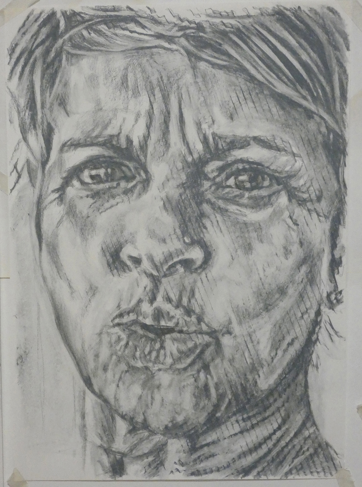
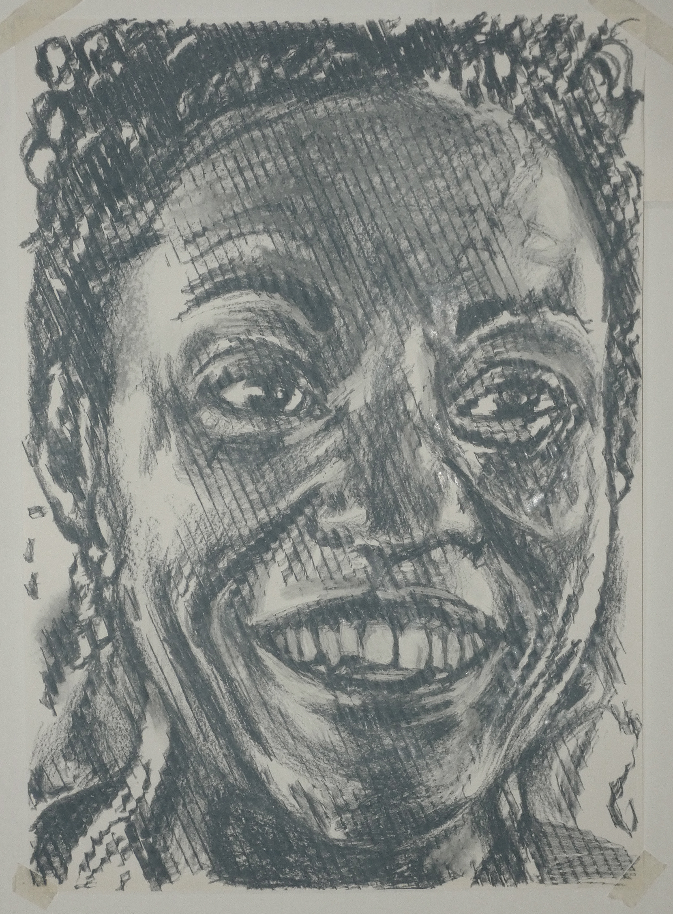

Portraitzeichnungen

Renate,
Unter dem Titel "Glückliche Menschen" versammeln sich Menschen, die mir nahe stehen oder deren Arbeit ich verehre. Aus Respekt reduzierte ich die Titel auf deren Vornamen. Sie entstanden Ende 2024 oder Anfang 2025 und sind im gleichen Format, 60 x 43 cm, und mit den gleichen Kreiden in einem mittleren Grauton gezeichnet.

Maren,

Wally,

div class="artwork-item">
Tatjana,
Maren,